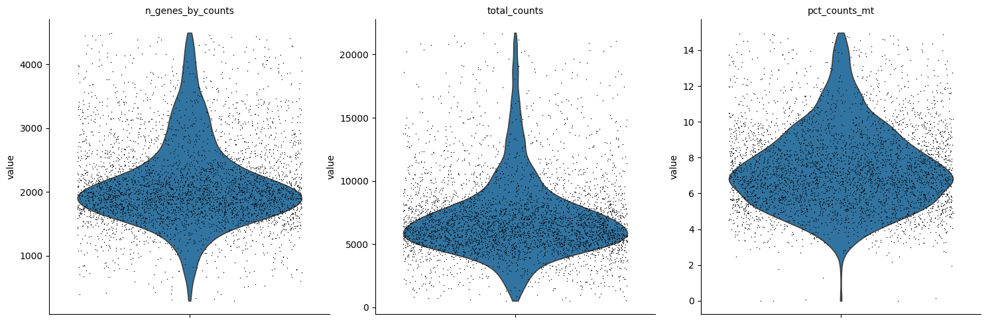
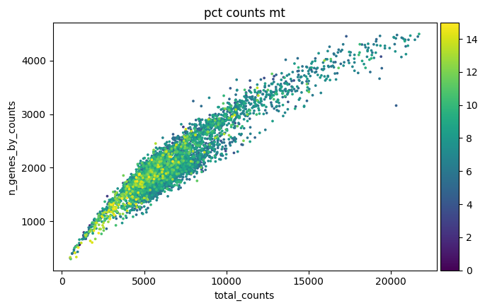
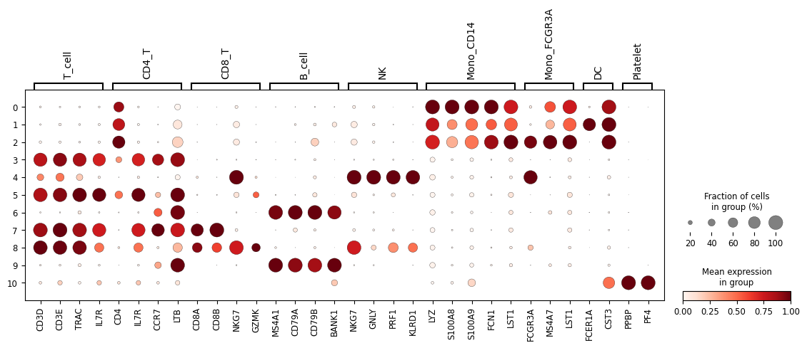
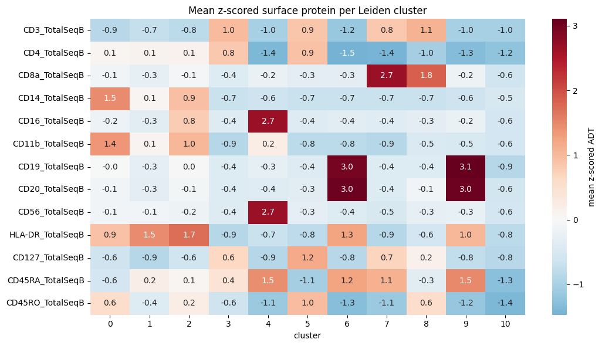

5k PBMC CITE-seq — QC & preprocessing#
Reads the 10x filtered_feature_bc_matrix.h5 (Gene Expression + Antibody Capture), runs standard scRNA QC (mito/ribo/hb metrics, cell/gene filtering, Scrublet doublet removal), normalizes RNA and protein, computes RNA PCA and protein embeddings, and builds two KNN graphs for downstream quantum-walk analysis. Outputs .h5ad files.
KNN-graph note (step 14): the RNA graph is built on the 8-D PCA space (PCA denoises the 2000-HVG space, which is otherwise too high-dimensional and noisy for meaningful Euclidean neighbors). The protein graph is built on the full 32-marker scaled space, NOT PCA — the antibody panel is already low-dimensional and every marker is an interpretable, high-signal measurement, so PCA→8 would smooth away exactly the fine marker-level distinctions a quantum walk should feel. See the note before step 14.
[1]:
import scanpy as sc
import pandas as pd
import numpy as np
from scipy import sparse
from pathlib import Path
sc.settings.verbosity = 1
# Paths are resolved relative to this notebook so it runs from a fresh clone.
HERE = Path.cwd()
DATA_PATH = HERE / "data" / "5k_pbmc_protein_v3_nextgem_filtered_feature_bc_matrix.h5"
OUT_DIR = HERE / "outputs"
OUT_DIR.mkdir(parents=True, exist_ok=True)
if not DATA_PATH.exists():
raise FileNotFoundError(
f"10x input not found at {DATA_PATH}.\n"
"It ships with the repository under "
"docs/source/tutorials/Preprocessing/data/. If it is missing, download the "
"'Feature / cell matrix HDF5 (filtered)' for the 5k PBMC "
"(Next GEM 3' v3.1, TotalSeq-B) dataset from 10x Genomics:\n"
" https://www.10xgenomics.com/datasets/5-k-peripheral-blood-mononuclear-"
"cells-pbm-cs-from-a-healthy-donor-with-cell-surface-proteins-next-gem-3-1-"
"standard-3-1-0\n"
f"and place it at {DATA_PATH}."
)
adata_all = sc.read_10x_h5(str(DATA_PATH), gex_only=False)
adata_all.var_names_make_unique()
adata_all.obs_names_make_unique()
print(adata_all)
print(adata_all.var["feature_types"].value_counts())
AnnData object with n_obs × n_vars = 5527 × 33570
var: 'gene_ids', 'feature_types', 'genome', 'pattern', 'read', 'sequence'
layers: None
feature_types
Gene Expression 33538
Antibody Capture 32
Name: count, dtype: int64
qbc/lib/python3.12/site-packages/scanpy/readwrite.py:322: UserWarning: Variable names are not unique. To make them unique, call `.var_names_make_unique`.
return AnnData(matrix, obs=obs_dict, var=var_dict)
[2]:
rna = adata_all[:, adata_all.var["feature_types"] == "Gene Expression"].copy()
adt = adata_all[:, adata_all.var["feature_types"] == "Antibody Capture"].copy()
print("RNA:", rna.shape, "| ADT:", adt.shape)
RNA: (5527, 33538) | ADT: (5527, 32)
[3]:
rna.layers["counts"] = rna.X.copy()
[4]:
gene_names = rna.var_names.str.upper()
rna.var["mt"] = gene_names.str.startswith("MT-")
rna.var["ribo"] = gene_names.str.startswith(("RPS", "RPL"))
rna.var["hb"] = gene_names.str.match(r"^HB[AB]")
print("MT:", int(rna.var["mt"].sum()),
"| Ribo:", int(rna.var["ribo"].sum()),
"| Hb:", int(rna.var["hb"].sum()))
MT: 13 | Ribo: 104 | Hb: 3
[5]:
sc.pp.calculate_qc_metrics(
rna,
qc_vars=["mt", "ribo", "hb"],
percent_top=None,
log1p=False,
inplace=True,
)
rna.obs[["n_genes_by_counts", "total_counts", "pct_counts_mt"]].describe()
[5]:
| n_genes_by_counts | total_counts | pct_counts_mt | |
|---|---|---|---|
| count | 5527.000000 | 5527.000000 | 5527.000000 |
| mean | 1795.484892 | 5990.152832 | 14.499464 |
| std | 963.762038 | 4494.203613 | 15.026707 |
| min | 58.000000 | 501.000000 | 0.000000 |
| 25% | 1142.000000 | 2859.500000 | 6.213643 |
| 50% | 1836.000000 | 5676.000000 | 7.998316 |
| 75% | 2254.500000 | 7586.000000 | 13.614652 |
| max | 9367.000000 | 110711.000000 | 93.956955 |
[6]:
min_genes = 200
max_pct_mt = 15
upper_genes = np.quantile(rna.obs["n_genes_by_counts"], 0.99)
upper_counts = np.quantile(rna.obs["total_counts"], 0.99)
keep_cells = (
(rna.obs["n_genes_by_counts"] >= min_genes)
& (rna.obs["pct_counts_mt"] <= max_pct_mt)
& (rna.obs["n_genes_by_counts"] <= upper_genes)
& (rna.obs["total_counts"] <= upper_counts)
)
print(f"Keeping {int(keep_cells.sum())} / {rna.n_obs} cells")
rna = rna[keep_cells].copy()
adt = adt[rna.obs_names, :].copy()
sc.pp.filter_genes(rna, min_cells=3)
print("After gene filter:", rna.shape)
Keeping 4143 / 5527 cells
After gene filter: (4143, 17838)
[7]:
sc.pl.violin(
rna,
["n_genes_by_counts", "total_counts", "pct_counts_mt"],
jitter=0.4,
multi_panel=True,
)
sc.pl.scatter(rna, x="total_counts", y="n_genes_by_counts", color="pct_counts_mt")


[8]:
rna_for_doublets = rna.copy()
rna_for_doublets.X = rna_for_doublets.layers["counts"].copy()
sc.pp.scrublet(rna_for_doublets)
rna.obs["doublet_score"] = rna_for_doublets.obs["doublet_score"]
rna.obs["predicted_doublet"] = rna_for_doublets.obs["predicted_doublet"]
n_db = int(rna.obs["predicted_doublet"].astype(bool).sum())
print(f"Predicted doublets: {n_db} / {rna.n_obs}")
rna = rna[~rna.obs["predicted_doublet"].astype(bool)].copy()
adt = adt[rna.obs_names, :].copy()
print("After doublet removal -> RNA:", rna.shape, "| ADT:", adt.shape)
OMP: Info #276: omp_set_nested routine deprecated, please use omp_set_max_active_levels instead.
Predicted doublets: 75 / 4143
After doublet removal -> RNA: (4068, 17838) | ADT: (4068, 32)
[9]:
sc.pp.normalize_total(rna, target_sum=1e4)
sc.pp.log1p(rna)
rna.raw = rna
[10]:
sc.pp.highly_variable_genes(
rna,
n_top_genes=2000,
flavor="seurat_v3",
layer="counts",
)
print("Highly variable genes:", int(rna.var["highly_variable"].sum()))
Highly variable genes: 2000
[11]:
rna_hvg = rna[:, rna.var["highly_variable"]].copy()
sc.pp.scale(rna_hvg, max_value=10)
sc.tl.pca(rna_hvg, n_comps=30, svd_solver="arpack")
rna.obsm["X_rna_pca"] = rna_hvg.obsm["X_pca"]
print("X_rna_pca:", rna.obsm["X_rna_pca"].shape)
/opt/homebrew/anaconda3/lib/python3.12/functools.py:909: UserWarning: zero-centering a sparse array/matrix densifies it.
return dispatch(args[0].__class__)(*args, **kw)
X_rna_pca: (4068, 30)
[12]:
from sklearn.preprocessing import StandardScaler
def to_dense(X):
return X.toarray() if sparse.issparse(X) else np.asarray(X)
protein_counts = to_dense(adt.X).astype(float)
protein_log = np.log1p(protein_counts)
protein_scaled = StandardScaler().fit_transform(protein_log)
rna.obsm["protein_counts"] = pd.DataFrame(
protein_counts,
index=rna.obs_names,
columns=adt.var_names,
)
rna.obsm["X_protein"] = pd.DataFrame(
protein_scaled,
index=rna.obs_names,
columns=adt.var_names,
)
rna.uns["protein_names"] = list(adt.var_names)
print("X_protein:", rna.obsm["X_protein"].shape)
X_protein: (4068, 32)
[13]:
from sklearn.decomposition import PCA
X_rna8 = rna.obsm["X_rna_pca"][:, :8]
X_protein = np.asarray(rna.obsm["X_protein"])
if X_protein.shape[1] > 8:
X_protein8 = PCA(n_components=8, random_state=0).fit_transform(X_protein)
else:
X_protein8 = X_protein
rna.obsm["X_rna8"] = X_rna8
rna.obsm["X_protein8"] = X_protein8
print("X_rna8:", X_rna8.shape, "| X_protein8:", X_protein8.shape)
X_rna8: (4068, 8) | X_protein8: (4068, 8)
Step 14 — KNN graphs (basis choice)#
Two graphs are built with k=15, symmetrized (A = max(A, Aᵀ)), for quantum-walk analysis.
RNA → PCA basis (``X_rna8``). RNA lives in a 2000-HVG space that is sparse and noise-dominated; Euclidean neighbors there are unreliable (curse of dimensionality). PCA is a denoising step, and the low-D manifold it produces is the biological structure a walk should traverse. Keep PCA.
Protein → raw scaled basis (``X_protein``, 32 markers, NOT PCA). The antibody panel is already low-dimensional and each marker is a direct, interpretable readout (CD4/CD8/CD19/…, plus isotype controls). There is no curse-of-dimensionality problem to fix, and PCA→8 would smooth away the exact fine-grained marker contrasts the walk should feel. So the protein graph uses the full scaled space.
[14]:
from sklearn.neighbors import kneighbors_graph
def make_knn_graph(X, k=15):
X = np.ascontiguousarray(np.asarray(X, dtype=float))
A = kneighbors_graph(
X,
n_neighbors=k,
mode="connectivity",
include_self=False,
)
A = A.maximum(A.T).tocsr()
return A
# RNA: KNN on the 8-D denoised PCA space.
rna.obsp["rna_connectivities"] = make_knn_graph(rna.obsm["X_rna8"], k=15)
# Protein: KNN on the FULL 32-marker scaled space (NOT PCA) -- see note above.
rna.obsp["protein_connectivities"] = make_knn_graph(np.asarray(rna.obsm["X_protein"]), k=15)
rna.uns["rna_graph_basis"] = "X_rna8 (first 8 RNA PCs)"
rna.uns["protein_graph_basis"] = "X_protein (32 scaled ADT markers, no PCA)"
for name in ["rna_connectivities", "protein_connectivities"]:
A = rna.obsp[name]
print(f"{name}: shape={A.shape}, mean neighbors/cell={A.nnz / A.shape[0]:.2f}")
rna_connectivities: shape=(4068, 4068), mean neighbors/cell=20.87
protein_connectivities: shape=(4068, 4068), mean neighbors/cell=22.95
[15]:
rna_out = OUT_DIR / "pbmc5k_citeseq_qc.h5ad"
adt_out = OUT_DIR / "pbmc5k_adt_raw.h5ad"
rna.write_h5ad(rna_out)
adt.write_h5ad(adt_out)
print("Wrote:", rna_out)
print("Wrote:", adt_out)
print(rna)
Wrote: outputs/pbmc5k_citeseq_qc.h5ad
Wrote: outputs/pbmc5k_adt_raw.h5ad
AnnData object with n_obs × n_vars = 4068 × 17838
obs: 'n_genes_by_counts', 'total_counts', 'total_counts_mt', 'pct_counts_mt', 'total_counts_ribo', 'pct_counts_ribo', 'total_counts_hb', 'pct_counts_hb', 'doublet_score', 'predicted_doublet'
var: 'gene_ids', 'feature_types', 'genome', 'pattern', 'read', 'sequence', 'mt', 'ribo', 'hb', 'n_cells_by_counts', 'mean_counts', 'pct_dropout_by_counts', 'total_counts', 'n_cells', 'highly_variable', 'highly_variable_rank', 'means', 'variances', 'variances_norm'
uns: 'log1p', 'hvg', 'protein_names', 'rna_graph_basis', 'protein_graph_basis'
obsm: 'X_rna_pca', 'protein_counts', 'X_protein', 'X_rna8', 'X_protein8'
obsp: 'rna_connectivities', 'protein_connectivities'
layers: None, 'counts'
Part 2 — Cluster annotation & binary label creation#
Cluster the QC’d cells (Leiden on RNA PCA), annotate broad PBMC cell types from cluster-level RNA markers + ADT sanity checks, drop ambiguous/tiny clusters, then collapse high-confidence annotations into binary classification tasks. Finally, build leakage-aware feature sets and train/test + graph-diffusion splits, and save the final labeled .h5ad.
[16]:
# Neighbors on the denoised RNA PCA space, UMAP for viz, Leiden for clusters.
# NOTE: flavor="igraph" + fixed random_state make cluster IDs reproducible -- the
# annotation map further down is tied to THIS exact clustering. (The bare
# sc.tl.leiden(...) default is deprecated in scanpy 1.12 and less reproducible.)
sc.pp.neighbors(rna, use_rep="X_rna_pca", n_neighbors=15, random_state=0)
sc.tl.umap(rna, random_state=0)
sc.tl.leiden(
rna,
resolution=0.6,
key_added="leiden_rna",
flavor="igraph",
n_iterations=2,
directed=False,
random_state=0,
)
print("Leiden clusters:", rna.obs["leiden_rna"].nunique())
print(rna.obs["leiden_rna"].value_counts().sort_index())
qbc/lib/python3.12/site-packages/tqdm/auto.py:21: TqdmWarning: IProgress not found. Please update jupyter and ipywidgets. See https://ipywidgets.readthedocs.io/en/stable/user_install.html
from .autonotebook import tqdm as notebook_tqdm
Leiden clusters: 11
leiden_rna
0 1098
1 128
2 168
3 867
4 353
5 683
6 156
7 94
8 348
9 164
10 9
Name: count, dtype: int64
[17]:
marker_genes = {
"T_cell": ["CD3D", "CD3E", "TRAC", "IL7R"],
"CD4_T": ["CD4", "IL7R", "CCR7", "LTB"],
"CD8_T": ["CD8A", "CD8B", "NKG7", "GZMK"],
"B_cell": ["MS4A1", "CD79A", "CD79B", "BANK1"],
"NK": ["NKG7", "GNLY", "PRF1", "KLRD1"],
"Mono_CD14": ["LYZ", "S100A8", "S100A9", "FCN1", "LST1"],
"Mono_FCGR3A": ["FCGR3A", "MS4A7", "LST1"],
"DC": ["FCER1A", "CST3"],
"Platelet": ["PPBP", "PF4"],
}
[18]:
sc.pl.dotplot(
rna,
marker_genes,
groupby="leiden_rna",
standard_scale="var",
)

[19]:
import seaborn as sns
import matplotlib.pyplot as plt
protein = rna.obsm["X_protein"] # DataFrame (z-scored ADT)
protein_df = pd.DataFrame(
np.asarray(protein),
index=rna.obs_names,
columns=rna.uns["protein_names"],
)
protein_df["cluster"] = rna.obs["leiden_rna"].values
cluster_protein_mean = protein_df.groupby("cluster").mean()
# Lineage-defining ADTs for the sanity check.
adt_key = [
"CD3_TotalSeqB", "CD4_TotalSeqB", "CD8a_TotalSeqB",
"CD14_TotalSeqB", "CD16_TotalSeqB", "CD11b_TotalSeqB",
"CD19_TotalSeqB", "CD20_TotalSeqB", "CD56_TotalSeqB",
"HLA-DR_TotalSeqB", "CD127_TotalSeqB", "CD45RA_TotalSeqB", "CD45RO_TotalSeqB",
]
plt.figure(figsize=(11, 6))
sns.heatmap(cluster_protein_mean[adt_key].T, center=0, cmap="RdBu_r",
annot=True, fmt=".1f", cbar_kws={"label": "mean z-scored ADT"})
plt.title("Mean z-scored surface protein per Leiden cluster")
plt.tight_layout()
plt.show()
cluster_protein_mean[adt_key].round(2)

[19]:
| CD3_TotalSeqB | CD4_TotalSeqB | CD8a_TotalSeqB | CD14_TotalSeqB | CD16_TotalSeqB | CD11b_TotalSeqB | CD19_TotalSeqB | CD20_TotalSeqB | CD56_TotalSeqB | HLA-DR_TotalSeqB | CD127_TotalSeqB | CD45RA_TotalSeqB | CD45RO_TotalSeqB | |
|---|---|---|---|---|---|---|---|---|---|---|---|---|---|
| cluster | |||||||||||||
| 0 | -0.86 | 0.05 | -0.10 | 1.47 | -0.17 | 1.38 | -0.02 | -0.11 | -0.10 | 0.90 | -0.63 | -0.56 | 0.58 |
| 1 | -0.73 | 0.12 | -0.28 | 0.08 | -0.33 | 0.09 | -0.31 | -0.32 | -0.10 | 1.46 | -0.88 | 0.21 | -0.40 |
| 2 | -0.83 | 0.13 | -0.06 | 0.94 | 0.78 | 1.03 | 0.03 | -0.09 | -0.15 | 1.74 | -0.61 | 0.05 | 0.24 |
| 3 | 0.98 | 0.84 | -0.42 | -0.68 | -0.39 | -0.88 | -0.42 | -0.40 | -0.39 | -0.88 | 0.64 | 0.43 | -0.65 |
| 4 | -1.04 | -1.38 | -0.21 | -0.64 | 2.67 | 0.24 | -0.27 | -0.38 | 2.69 | -0.69 | -0.89 | 1.45 | -1.15 |
| 5 | 0.87 | 0.91 | -0.31 | -0.67 | -0.38 | -0.82 | -0.39 | -0.34 | -0.31 | -0.79 | 1.18 | -1.05 | 0.96 |
| 6 | -1.17 | -1.47 | -0.31 | -0.67 | -0.36 | -0.83 | 2.96 | 3.02 | -0.43 | 1.26 | -0.85 | 1.23 | -1.31 |
| 7 | 0.83 | -1.42 | 2.69 | -0.68 | -0.38 | -0.87 | -0.43 | -0.41 | -0.52 | -0.87 | 0.68 | 1.10 | -1.13 |
| 8 | 1.07 | -1.05 | 1.84 | -0.68 | -0.32 | -0.46 | -0.40 | -0.10 | -0.26 | -0.56 | 0.17 | -0.33 | 0.58 |
| 9 | -1.01 | -1.34 | -0.16 | -0.64 | -0.22 | -0.49 | 3.11 | 3.02 | -0.25 | 1.04 | -0.77 | 1.48 | -1.19 |
| 10 | -1.01 | -1.23 | -0.62 | -0.51 | -0.58 | -0.56 | -0.89 | -0.58 | -0.58 | -0.81 | -0.85 | -1.28 | -1.38 |
Cluster annotation (evidence-based)#
Derived from the RNA dotplot + ADT heatmap above. Cluster IDs come from the fixed Leiden run, so this map is reproducible. This is not the generic example map — it reflects the 11 clusters this dataset actually produces.
Cluster |
RNA evidence |
ADT evidence |
Call |
|---|---|---|---|
0 |
LYZ/S100A8/S100A9/FCN1 hi |
CD14⁺ CD11b⁺ |
|
1 |
FCER1A⁺ CST3⁺, CD14 low |
HLA-DR⁺ CD14⁻ |
|
2 |
FCGR3A/MS4A7/LST1 hi |
CD16⁺ |
|
3 |
CD3D/E, IL7R, CCR7 |
CD3⁺ CD4⁺ |
|
4 |
NKG7/GNLY/PRF1/KLRD1 hi |
CD56⁺ CD16⁺ CD3⁻ |
|
5 |
CD3, IL7R, LTB |
CD3⁺ CD4⁺ CD127⁺ |
|
6 |
MS4A1/CD79A/CD79B/BANK1 |
CD19⁺ CD20⁺ |
|
7 |
CD8A/CD8B, CCR7 |
CD8a⁺⁺ CD3⁺ |
|
8 |
CD8A/B, NKG7, GZMK |
CD8a⁺ CD3⁺ |
|
9 |
MS4A1/CD79A/CD79B |
CD19⁺ CD20⁺ |
|
10 |
PPBP/PF4 (n=9) |
— |
|
[20]:
# Evidence-based map tied to the reproducible Leiden run above.
cluster_to_cell_type = {
"0": "CD14_monocyte",
"1": "DC",
"2": "FCGR3A_monocyte",
"3": "CD4_T",
"4": "NK",
"5": "CD4_T",
"6": "B_cell",
"7": "CD8_T",
"8": "CD8_T",
"9": "B_cell",
"10": "platelet", # platelet-rich + very small -> excluded below
}
rna.obs["cell_type"] = (
rna.obs["leiden_rna"]
.astype(str)
.map(cluster_to_cell_type)
.fillna("unknown")
.astype("category")
)
print(rna.obs["cell_type"].value_counts())
cell_type
CD4_T 1550
CD14_monocyte 1098
CD8_T 442
NK 353
B_cell 320
FCGR3A_monocyte 168
DC 128
platelet 9
Name: count, dtype: int64
[21]:
# Keep high-confidence lineages only; drop unknown / ambiguous / platelet-rich /
# very-small clusters. obsp graphs are auto-subset to the retained cells by AnnData.
usable_cell_types = [
"CD4_T",
"CD8_T",
"CD14_monocyte",
"FCGR3A_monocyte",
"B_cell",
"NK",
"DC",
]
n_before = rna.n_obs
rna = rna[rna.obs["cell_type"].isin(usable_cell_types)].copy()
rna.obs["cell_type"] = rna.obs["cell_type"].cat.remove_unused_categories()
print(f"Dropped {n_before - rna.n_obs} cells; kept {rna.n_obs}")
print(rna.obs["cell_type"].value_counts())
Dropped 9 cells; kept 4059
cell_type
CD4_T 1550
CD14_monocyte 1098
CD8_T 442
NK 353
B_cell 320
FCGR3A_monocyte 168
DC 128
Name: count, dtype: int64
Binary tasks#
High-confidence annotations collapsed into three binary labels. Cells not participating in a task are left as NaN (e.g. B/NK/DC carry no binary_t_vs_mono label).
[22]:
# Task 1 (primary): T cells vs monocytes
t_cells = ["CD4_T", "CD8_T"]
monocytes = ["CD14_monocyte", "FCGR3A_monocyte"]
rna.obs["binary_t_vs_mono"] = pd.Series(index=rna.obs_names, dtype="object")
rna.obs.loc[rna.obs["cell_type"].isin(t_cells), "binary_t_vs_mono"] = "T_cell"
rna.obs.loc[rna.obs["cell_type"].isin(monocytes), "binary_t_vs_mono"] = "Monocyte"
rna.obs["binary_t_vs_mono"] = rna.obs["binary_t_vs_mono"].astype("category")
# Task 2 (backup): lymphoid vs myeloid
lymphoid = ["CD4_T", "CD8_T", "B_cell", "NK"]
myeloid = ["CD14_monocyte", "FCGR3A_monocyte", "DC"]
rna.obs["binary_lymphoid_vs_myeloid"] = pd.Series(index=rna.obs_names, dtype="object")
rna.obs.loc[rna.obs["cell_type"].isin(lymphoid), "binary_lymphoid_vs_myeloid"] = "Lymphoid"
rna.obs.loc[rna.obs["cell_type"].isin(myeloid), "binary_lymphoid_vs_myeloid"] = "Myeloid"
rna.obs["binary_lymphoid_vs_myeloid"] = rna.obs["binary_lymphoid_vs_myeloid"].astype("category")
# Task 3 (extension): CD4 vs CD8 T cells
rna.obs["binary_cd4_vs_cd8"] = pd.Series(index=rna.obs_names, dtype="object")
rna.obs.loc[rna.obs["cell_type"] == "CD4_T", "binary_cd4_vs_cd8"] = "CD4_T"
rna.obs.loc[rna.obs["cell_type"] == "CD8_T", "binary_cd4_vs_cd8"] = "CD8_T"
rna.obs["binary_cd4_vs_cd8"] = rna.obs["binary_cd4_vs_cd8"].astype("category")
for c in ["binary_t_vs_mono", "binary_lymphoid_vs_myeloid", "binary_cd4_vs_cd8"]:
print(c, "->", rna.obs[c].value_counts(dropna=False).to_dict())
binary_t_vs_mono -> {'T_cell': 1992, 'Monocyte': 1266, nan: 801}
binary_lymphoid_vs_myeloid -> {'Lymphoid': 2665, 'Myeloid': 1394}
binary_cd4_vs_cd8 -> {nan: 2067, 'CD4_T': 1550, 'CD8_T': 442}
Leakage-aware feature sets#
The binary labels are defined from lineage markers, so leaving those markers in the feature matrix lets a classifier trivially recover the label (leakage). We build two feature sets over the modeling space (2000 HVGs + 32 ADTs): all_features and marker_removed_features (the label-defining genes/proteins stripped out). Feature names below match the actual 10x feature names in this dataset.
[23]:
label_leakage_genes = [
"CD3D", "CD3E", "TRAC",
"CD4", "CD8A", "CD8B",
"LYZ", "S100A8", "S100A9", "FCN1",
"MS4A1", "CD79A", "CD79B",
]
label_leakage_proteins = [
"CD3_TotalSeqB",
"CD4_TotalSeqB",
"CD8a_TotalSeqB", # lowercase 'a' matches the 10x feature name
"CD14_TotalSeqB",
"CD16_TotalSeqB",
"CD19_TotalSeqB",
]
present_leak_genes = [g for g in label_leakage_genes if g in rna.var_names]
present_leak_prot = [p for p in label_leakage_proteins if p in rna.uns["protein_names"]]
rna.var["is_label_leakage"] = rna.var_names.isin(present_leak_genes)
hvg_genes = rna.var_names[rna.var["highly_variable"]].tolist()
protein_names = list(rna.uns["protein_names"])
rna.uns["feature_sets"] = {
"all_features": {"genes": hvg_genes, "proteins": protein_names},
"marker_removed_features": {
"genes": [g for g in hvg_genes if g not in present_leak_genes],
"proteins": [p for p in protein_names if p not in present_leak_prot],
},
"label_leakage_genes": present_leak_genes,
"label_leakage_proteins": present_leak_prot,
}
fs = rna.uns["feature_sets"]
print("all_features :", len(fs["all_features"]["genes"]), "genes +",
len(fs["all_features"]["proteins"]), "proteins")
print("marker_removed :", len(fs["marker_removed_features"]["genes"]), "genes +",
len(fs["marker_removed_features"]["proteins"]), "proteins")
print("removed leakage :", len(present_leak_genes), "genes,",
len(present_leak_prot), "proteins")
all_features : 2000 genes + 32 proteins
marker_removed : 1987 genes + 26 proteins
removed leakage : 13 genes, 6 proteins
Splits#
``split`` — general stratified 70/30 train/test over all usable cells (stratified by
cell_type) for standard ML/QML classifiers.``graph_seed`` / ``graph_eval`` — the graph-diffusion partition for the primary task (
binary_t_vs_mono): a small labeled seed set (30%) spreads class evidence over the cell-similarity graph; the held-out 70% (graph_eval) is used to recover labels.
Seed labels = a few known cells · Graph = cell-state similarity network · Random walk = spread class evidence · Evaluation = recover labels for held-out cells.
[24]:
from sklearn.model_selection import train_test_split
# General train/test split (stratified by cell type) for ML/QML.
train_all, test_all = train_test_split(
rna.obs_names,
test_size=0.3,
random_state=7,
stratify=rna.obs["cell_type"],
)
rna.obs["split"] = "train"
rna.obs.loc[test_all, "split"] = "test"
rna.obs["split"] = rna.obs["split"].astype("category")
# Graph-diffusion seed/eval for the primary task (few known seeds, many held-out).
task = "binary_t_vs_mono"
valid = rna.obs[task].notna()
cells = rna.obs_names[valid]
labels = rna.obs.loc[cells, task]
train_cells, test_cells = train_test_split(
cells,
test_size=0.7,
random_state=7,
stratify=labels,
)
rna.obs["graph_seed"] = False
rna.obs.loc[train_cells, "graph_seed"] = True
rna.obs["graph_eval"] = False
rna.obs.loc[test_cells, "graph_eval"] = True
print("split:", rna.obs["split"].value_counts().to_dict())
print(f"graph_seed (T/Mono): {int(rna.obs['graph_seed'].sum())} | "
f"graph_eval: {int(rna.obs['graph_eval'].sum())}")
split: {'train': 2841, 'test': 1218}
graph_seed (T/Mono): 977 | graph_eval: 2281
[25]:
rna.uns["labeling_notes"] = {
"cell_type_method": "Leiden (res=0.6, igraph flavor, seed=0) on RNA PCA; "
"cluster-level RNA markers + ADT sanity checks",
"primary_task": "T cells versus monocytes (binary_t_vs_mono)",
"backup_task": "lymphoid versus myeloid (binary_lymphoid_vs_myeloid)",
"extension_task": "CD4 versus CD8 T cells (binary_cd4_vs_cd8)",
"excluded_cells": "unknown, ambiguous, platelet-rich (cluster 10, n=9) clusters",
"leakage_handling": "marker_removed_features drops lineage-defining genes/proteins "
"to prevent trivial label recovery",
"split": "70/30 train/test stratified by cell_type (random_state=7)",
"graph_diffusion": "graph_seed=30% seeds / graph_eval=70% held-out for "
"binary_t_vs_mono (random_state=7)",
"warning": "Labels are for tutorial/benchmarking, not a curated immune atlas.",
}
final_out = OUT_DIR / "pbmc5k_citeseq_labeled.h5ad"
rna.write_h5ad(final_out)
print("Wrote:", final_out)
print(rna)
Wrote: outputs/pbmc5k_citeseq_labeled.h5ad
AnnData object with n_obs × n_vars = 4059 × 17838
obs: 'n_genes_by_counts', 'total_counts', 'total_counts_mt', 'pct_counts_mt', 'total_counts_ribo', 'pct_counts_ribo', 'total_counts_hb', 'pct_counts_hb', 'doublet_score', 'predicted_doublet', 'leiden_rna', 'cell_type', 'binary_t_vs_mono', 'binary_lymphoid_vs_myeloid', 'binary_cd4_vs_cd8', 'split', 'graph_seed', 'graph_eval'
var: 'gene_ids', 'feature_types', 'genome', 'pattern', 'read', 'sequence', 'mt', 'ribo', 'hb', 'n_cells_by_counts', 'mean_counts', 'pct_dropout_by_counts', 'total_counts', 'n_cells', 'highly_variable', 'highly_variable_rank', 'means', 'variances', 'variances_norm', 'is_label_leakage'
uns: 'log1p', 'hvg', 'protein_names', 'rna_graph_basis', 'protein_graph_basis', 'neighbors', 'umap', 'leiden_rna', 'feature_sets', 'labeling_notes'
obsm: 'X_rna_pca', 'protein_counts', 'X_protein', 'X_rna8', 'X_protein8', 'X_umap'
obsp: 'rna_connectivities', 'protein_connectivities', 'distances', 'connectivities'
layers: None, 'counts'
Part 3 — Balanced subsampling & small downloadable benchmarks#
Small, class-balanced sets sized for quantum / small-scale ML.
ML classification — each cell is an independent sample, so we export a small self-contained
.h5adper binary task: 210 cells/class train + 40 cells/class test (≈420 / ≈80), with KNN graphs recomputed within the subset so the small file works for both classical and graph-based models on its own.Graph diffusion — the graph is the full cell-similarity network, so we do not shrink it. Instead we add balanced seed/eval masks to the full object (kept intact) and give the graph task a little more headroom: 300 seeds/class + 100 eval/class.
[26]:
# Reproducible balanced sampler: pick n_train + n_test cells per class, disjoint.
N_TRAIN_PER_CLASS = 210
N_TEST_PER_CLASS = 40
# Graph diffusion gets a little more (full graph is retained).
N_SEED_PER_CLASS = 300
N_EVAL_PER_CLASS = 100
BINARY_TASKS = ["binary_t_vs_mono", "binary_lymphoid_vs_myeloid", "binary_cd4_vs_cd8"]
def balanced_split(label_series, n_train, n_test, seed=7):
"""Return (train_cells, test_cells) with equal cells per class, disjoint."""
rng = np.random.default_rng(seed)
labels = label_series.dropna()
train, test = [], []
for cls in sorted(labels.unique()):
cells = labels.index[labels == cls].to_numpy()
rng.shuffle(cells)
need = n_train + n_test
if len(cells) < need:
raise ValueError(f"class {cls!r} has {len(cells)} cells < {need} requested")
train += list(cells[:n_train])
test += list(cells[n_train:need])
return train, test
[27]:
# Add a balanced train/test subsample column per binary task to the full object.
for task in BINARY_TASKS:
tr, te = balanced_split(rna.obs[task], N_TRAIN_PER_CLASS, N_TEST_PER_CLASS, seed=7)
col = f"subsample_{task.replace('binary_', '')}"
rna.obs[col] = pd.Series(index=rna.obs_names, dtype="object")
rna.obs.loc[tr, col] = "train"
rna.obs.loc[te, col] = "test"
rna.obs[col] = rna.obs[col].astype("category")
print(f"{col}: train={len(tr)} test={len(te)} | per-class balance:")
print(" ", rna.obs.loc[rna.obs[col].notna()].groupby(col, observed=True)[task]
.value_counts().to_dict())
subsample_t_vs_mono: train=420 test=80 | per-class balance:
{('test', 'Monocyte'): 40, ('test', 'T_cell'): 40, ('train', 'Monocyte'): 210, ('train', 'T_cell'): 210}
subsample_lymphoid_vs_myeloid: train=420 test=80 | per-class balance:
{('test', 'Myeloid'): 40, ('test', 'Lymphoid'): 40, ('train', 'Myeloid'): 210, ('train', 'Lymphoid'): 210}
subsample_cd4_vs_cd8: train=420 test=80 | per-class balance:
{('test', 'CD4_T'): 40, ('test', 'CD8_T'): 40, ('train', 'CD4_T'): 210, ('train', 'CD8_T'): 210}
[28]:
# Balanced graph-diffusion seed/eval for the PRIMARY task on the FULL graph.
seed_cells, eval_cells = balanced_split(
rna.obs["binary_t_vs_mono"], N_SEED_PER_CLASS, N_EVAL_PER_CLASS, seed=11
)
rna.obs["graph_seed_bal"] = False
rna.obs.loc[seed_cells, "graph_seed_bal"] = True
rna.obs["graph_eval_bal"] = False
rna.obs.loc[eval_cells, "graph_eval_bal"] = True
assert not (rna.obs["graph_seed_bal"] & rna.obs["graph_eval_bal"]).any()
print(f"graph_seed_bal: {int(rna.obs['graph_seed_bal'].sum())} "
f"(seeds, {N_SEED_PER_CLASS}/class) | "
f"graph_eval_bal: {int(rna.obs['graph_eval_bal'].sum())} "
f"(held-out, {N_EVAL_PER_CLASS}/class) | full graph retained")
graph_seed_bal: 600 (seeds, 300/class) | graph_eval_bal: 200 (held-out, 100/class) | full graph retained
Small self-contained benchmarks (one file per task)#
Trimmed for demo: each file holds only its 500 subsampled cells, 2000 HVGs (full-gene matrix and raw dropped) plus the 32 ADTs in obsm, with a freshly computed within-subset KNN graph (RNA on the 8-D PCA space, protein on the full 32-marker space — same bases as the full object). Ready for classical ML, QML, or small-scale graph diffusion.
[29]:
# `make_knn_graph` is defined in Part 1 (step 14) and reused here.
small_files = {}
for task in BINARY_TASKS:
col = f"subsample_{task.replace('binary_', '')}"
# Demo trim: keep 2000 HVGs only, drop full-gene X/raw. ADTs live in obsm.
sub = rna[rna.obs[col].notna(), rna.var["highly_variable"]].copy()
sub.raw = None
# Rename the split column to a generic name and keep the active label handy.
sub.obs["subsample_split"] = sub.obs[col].astype("category")
sub.obs["label"] = sub.obs[task].astype("category")
# Recompute walk graphs WITHIN the subset (the inherited full-graph obsp is dropped).
for k in ["connectivities", "distances", "rna_connectivities", "protein_connectivities"]:
sub.obsp.pop(k, None)
sub.obsp["rna_connectivities"] = make_knn_graph(sub.obsm["X_rna8"], k=15)
sub.obsp["protein_connectivities"] = make_knn_graph(np.asarray(sub.obsm["X_protein"]), k=15)
sub.uns["subsample_notes"] = {
"task": task,
"n_train_per_class": N_TRAIN_PER_CLASS,
"n_test_per_class": N_TEST_PER_CLASS,
"graphs": "KNN (k=15) recomputed within this subset; "
"RNA on X_rna8 (PCA), protein on X_protein (32 markers)",
"features": "2000 HVG genes (X, counts) + 32 ADTs (obsm); raw dropped",
"parent": "pbmc5k_citeseq_labeled.h5ad",
}
out = OUT_DIR / f"pbmc5k_small_{task.replace('binary_', '')}.h5ad"
sub.write_h5ad(out)
small_files[task] = (out, sub.n_obs)
print(f"{out.name}: {sub.n_obs} cells | "
f"{sub.obs['subsample_split'].value_counts().to_dict()} | "
f"labels {sub.obs['label'].value_counts().to_dict()}")
small_files
pbmc5k_small_t_vs_mono.h5ad: 500 cells | {'train': 420, 'test': 80} | labels {'Monocyte': 250, 'T_cell': 250}
pbmc5k_small_lymphoid_vs_myeloid.h5ad: 500 cells | {'train': 420, 'test': 80} | labels {'Lymphoid': 250, 'Myeloid': 250}
pbmc5k_small_cd4_vs_cd8.h5ad: 500 cells | {'train': 420, 'test': 80} | labels {'CD4_T': 250, 'CD8_T': 250}
[29]:
{'binary_t_vs_mono': (PosixPath('outputs/pbmc5k_small_t_vs_mono.h5ad'),
500),
'binary_lymphoid_vs_myeloid': (PosixPath('outputs/pbmc5k_small_lymphoid_vs_myeloid.h5ad'),
500),
'binary_cd4_vs_cd8': (PosixPath('outputs/pbmc5k_small_cd4_vs_cd8.h5ad'),
500)}
[30]:
# Re-save the full object with the new balanced subsample / graph columns.
final_out = OUT_DIR / "pbmc5k_citeseq_labeled.h5ad"
rna.write_h5ad(final_out)
print("Updated full object:", final_out)
print("New obs columns:",
[c for c in rna.obs.columns if c.startswith(("subsample_", "graph_seed_bal", "graph_eval_bal"))])
Updated full object: outputs/pbmc5k_citeseq_labeled.h5ad
New obs columns: ['subsample_t_vs_mono', 'subsample_lymphoid_vs_myeloid', 'subsample_cd4_vs_cd8', 'graph_seed_bal', 'graph_eval_bal']
Part 4 — Graph-only benchmark (soft seeds / eval)#
A mid-size, download-friendly file for full-graph diffusion on the primary task (T vs monocyte). The 3,258 T/Mono cells are subsampled to ~800 balanced nodes (400/class); the KNN graphs are recomputed on those nodes so the network is intact at this scale (not a sparse slice of the big graph). .raw and the full-gene matrix are dropped (2000 HVGs kept) so the file downloads at a few MB.
Soft seeds/eval. Diffusion is seeded from a soft label matrix obsm["Y_soft"] (columns [T_cell, Monocyte]):
seed nodes (100/class) carry a soft one-hot — confidence
alpha=0.9on the true class,0.1on the other (soft, not hard 1/0, so a walk can still revise them);eval nodes (300/class) carry a uniform prior
[0.5, 0.5](unknown) and are scored against ground truth after diffusion.
[31]:
# Build the ~800-node graph benchmark for binary_t_vs_mono.
N_NODES_PER_CLASS = 400 # 800 nodes total, balanced
N_SEED_PER_CLASS = 100 # soft seeds
N_EVAL_PER_CLASS = 300 # soft eval (held-out); 100 + 300 = 400 per class
ALPHA = 0.9 # seed confidence (soft one-hot)
CLASS_ORDER = ["T_cell", "Monocyte"] # column order of Y_soft
rng = np.random.default_rng(23)
tvm = rna.obs["binary_t_vs_mono"].dropna()
# 1) pick 400 nodes/class, then split each class into seed/eval
node_cells, seed_cells, eval_cells = [], [], []
for cls in CLASS_ORDER:
cells = tvm.index[tvm == cls].to_numpy()
rng.shuffle(cells)
chosen = cells[:N_NODES_PER_CLASS]
node_cells += list(chosen)
seed_cells += list(chosen[:N_SEED_PER_CLASS])
eval_cells += list(chosen[N_SEED_PER_CLASS:N_NODES_PER_CLASS])
g = rna[node_cells, rna.var["highly_variable"]].copy()
g.raw = None
# 2) recompute the walk graphs on these 800 nodes (RNA on PCA, protein on 32 markers)
for k in ["connectivities", "distances", "rna_connectivities", "protein_connectivities"]:
g.obsp.pop(k, None)
g.obsp["rna_connectivities"] = make_knn_graph(g.obsm["X_rna8"], k=15)
g.obsp["protein_connectivities"] = make_knn_graph(np.asarray(g.obsm["X_protein"]), k=15)
# 3) roles + hard masks
seed_set, eval_set = set(seed_cells), set(eval_cells)
g.obs["graph_role"] = pd.Categorical(
["seed" if c in seed_set else "eval" for c in g.obs_names],
categories=["seed", "eval"],
)
g.obs["graph_seed"] = g.obs["graph_role"] == "seed"
g.obs["graph_eval"] = g.obs["graph_role"] == "eval"
g.obs["label"] = g.obs["binary_t_vs_mono"].astype("category")
g.obs["label_int"] = g.obs["label"].map({c: i for i, c in enumerate(CLASS_ORDER)}).astype(int)
# 4) soft label-initialization matrix Y_soft (n x 2)
Y = np.full((g.n_obs, len(CLASS_ORDER)), 0.5, dtype=float) # eval/unknown = uniform prior
for i, c in enumerate(g.obs_names):
if c in seed_set:
j = CLASS_ORDER.index(g.obs["label"].iloc[i])
Y[i, :] = 1.0 - ALPHA
Y[i, j] = ALPHA
g.obsm["Y_soft"] = Y
g.uns["graph_benchmark_notes"] = {
"task": "binary_t_vs_mono",
"n_nodes": int(g.n_obs),
"n_seed_per_class": N_SEED_PER_CLASS,
"n_eval_per_class": N_EVAL_PER_CLASS,
"seed_confidence_alpha": ALPHA,
"class_order": CLASS_ORDER,
"Y_soft": "n x 2 soft label init: seeds=soft one-hot (alpha), eval=uniform [0.5,0.5]",
"graphs": "KNN k=15 recomputed on these nodes; RNA on X_rna8 (PCA), protein on X_protein",
"usage": "diffuse Y_soft over obsp['rna_connectivities']; score argmax on graph_eval vs label",
"parent": "pbmc5k_citeseq_labeled.h5ad",
}
out = OUT_DIR / "pbmc5k_graph_t_vs_mono.h5ad"
g.write_h5ad(out)
print(f"Wrote {out.name}: {g.n_obs} nodes x {g.n_vars} HVGs")
print(" roles:", g.obs["graph_role"].value_counts().to_dict())
print(" seed label balance:", g.obs.loc[g.obs["graph_seed"], "label"].value_counts().to_dict())
print(" eval label balance:", g.obs.loc[g.obs["graph_eval"], "label"].value_counts().to_dict())
print(" Y_soft rows (seed example):", Y[g.obs["graph_seed"].values][0],
"| eval example:", Y[g.obs["graph_eval"].values][0])
print(" rna graph:", g.obsp["rna_connectivities"].shape,
"mean_nbr=%.1f" % (g.obsp["rna_connectivities"].nnz / g.n_obs))
Wrote pbmc5k_graph_t_vs_mono.h5ad: 800 nodes x 2000 HVGs
roles: {'eval': 600, 'seed': 200}
seed label balance: {'Monocyte': 100, 'T_cell': 100}
eval label balance: {'Monocyte': 300, 'T_cell': 300}
Y_soft rows (seed example): [0.9 0.1] | eval example: [0.5 0.5]
rna graph: (800, 800) mean_nbr=20.5